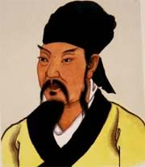
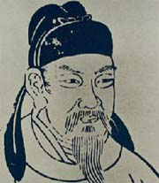
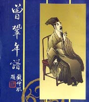

百家讲坛 白居易
介绍：
白居易，一位在中国文学史上享有盛名并影响深远的中唐诗人，他的诗在当时就流传广泛，上自宫廷，下至民间，处处皆是，其声名还远播到新罗和日本。白居易在唐朝可以说是一个偶像级的人物，他的诗歌影响力不仅在文化圈子里流传，同时也风靡娱乐界。

百家讲坛 唐宋八大家_韩愈
介绍：
韩愈到底为什么位居“唐宋八大家”之首呢？韩愈生于唐代中期的公元768年，字退之，河南孟州人，他是唐代古文运动的倡导者，与另一位著名的文学家柳宗元并称“韩柳”。那么，康震教授解读“唐宋八大家”，为什么一定要从韩愈开始讲起呢？

百家讲坛 唐宋八大家_柳宗元
介绍：
柳宗元用了仅仅十一年时间，便由一名普通的读书郎成长为国务院重要部委的高级公务员，这与在仕途之路上坎坷不断的韩愈相比，简直是天壤之别。少年时代的他，才华出众，平步青云，然而就在事业蒸蒸日上的关键时刻，他却遭到一场异常猛烈的政治打击。
百家讲坛 破解幸福密码
介绍：
有人说金钱就是幸福，那么为什么我们现在的人均收入，已经提高了很多，但感到幸福的人，却并没有比以前增加呢？是什么，阻碍了我们去感知幸福？在通往幸福的道路上，隐藏着哪些我们没有觉察到的杀手呢？倾听一下毕淑敏老师德解析吧！
百家讲坛 孔子是怎样炼成的
介绍：
《孔子是怎样炼成的》系列节目也将让人们看到一个真实的孔子是如何从凡人修炼成圣人的过程，又是如何用自己一生的不懈努力激励一个伟大民族走向复兴。

百家讲坛 水墨齐白石
介绍：
文化部文化市场发展中心艺术品评估委员会副秘书长吕立新，多年来潜心研究中国书画鉴赏，对齐白石的作品研究颇深，曾主持建立《20世纪美术作品国家档案》。从今天起，让我们跟随吕立新老师，一同走进国画大师齐白石的人生，读他的诗、品他的画，从诗情画意中感受源远流长的中华文化。

百家讲坛 《红楼梦》八十回后真故事
介绍：
众所周知，世界上似乎没有哪一本书能像《红楼梦》这样引起人们喋喋不休的争论，也没有哪一本书能像《红楼梦》这样引发那么多人关注和研究。究其原因，最主要的大概就是曹雪芹留下了一本不完整的书稿，这就给后人留下了巨大的话语空间...

百家讲坛 名相管仲
介绍：
二千七百年多年前，中国历史进入了春秋时代。虽然各个诸侯国在名义上仍然尊崇周朝天子为天下之王，但相互之间却经常因为土地、财富和人民而发生战争。在烽烟四起、弱肉强食的三百年的争斗中，名相管仲有五位诸侯国国君，先后依靠自身的实力和声望，召集诸侯会盟而成为诸侯盟主...
百家讲坛 鲍鹏山新说《水浒》_宋江
介绍：
宋江是中国古典小说《水浒传》中的主要人物之一。梁山一百单八将之首，人称“孝义黑三郎”、“及时雨”、“呼保义”。原本是郓城县押司，后加入梁山，在托塔天王晁盖阵亡后成为梁山的首领，极力主张接受朝廷的招安...
百家讲坛 塞北三朝_辽
介绍：
在《塞北三朝之辽》中，袁腾飞将讲述塞北契丹民族逐步开化并建立政权，以及由鼎盛而走向衰落的那段不为人熟知的北方少数民族历史，为我们打开一幅跨越两晋到隋唐乃至宋辽几百年间的巨幅历史画卷，画面辽阔壮观，景致旷远而浩瀚...
百家讲坛 永乐大帝
介绍：
在中国历史上，曾有这样一位皇帝，他生于乱世，长在皇宫，年轻时封王守边，却在盛年时起兵造反，最终从侄子的手中夺下了皇位。他就是明朝永乐皇帝朱棣。朱棣虽然弑君夺位，却开创了一个辉煌的永乐盛世：永乐时代的中国，是当之无愧的世界第一大国...

百家讲坛 成语趣谈
介绍：
我要通过讲成语故事向朋友们介绍成语的一个特点，也是成语博大精深的一种表现。是什么呢？就是成语“字字皆有本”。所谓“字字皆有本”是什么意思呢？就是成语所用的每一个字都是有根据的，都是有它独特的用意的。由于它有这样一个特点，所以它不需要使用成语的人随便改动它...

百家讲坛 走近曹操
介绍：
赤壁之战是整个三国时代一个重要的转折点，赤壁之战的爆发才由东汉末年的群雄争霸转为真正意义上“三国鼎立”。兵败赤壁后，曹操明白了心急吃不了热豆腐，平定南方的大业还要从长计议。放眼望去，少有大志的刘备已经是羽翼丰满，大有平定天下之势...

百家讲坛 解码关公
介绍：
在中华民族的传统文化中，关羽不但是一位真实的历史人物，还是一个超越人间的帝王，更是一尊无处不在的神灵。历史上，关帝庙曾经遍布全国各地，几乎每个村庄都有关帝庙，其数量远远超过每个县才有一所的孔庙；而作为财神的关公，更是无处不在...

百家讲坛 军旅作家王树增讲长征（2008年首播，跳转至首播页面）
介绍：
1931年1月、5月和9月、1933年3月中央苏区军民团结一致，先后打破了蒋介石数十万大军对中央苏区进行的四次大规模“围剿”，夺取了反“围剿”的胜利。巩固和扩大了中央苏区。1931年11月，第一次全国苏维埃代表大会在瑞金举行，宣布中华苏维埃共和国临时中央政府成立，毛泽东任主席。

百家讲坛 解读《弟子规》
介绍：
《弟子规》是一本只有一千来字的小册子，儒家思想提倡的孝、悌、谨、信、泛爱众、亲仁和余力学文等思想，都在《弟子规》中，有明确的行为规范，那么这些行为规范，对于现代人会有什么作用呢？《弟子规》为什么会引起许多现代人的重视...
百家讲坛 抗倭英雄戚继光
介绍：
主讲郦波对戚继光的军事成就作了全新意义的阐释，重新赋予戚继光这位抗倭英雄应有的历史评价。一起重温那段悲壮历史中的民族感，并唤起人们强烈的爱国主义情怀。

百家讲坛 清官海瑞
介绍：
海瑞，一个生前和死后都充满争议的人物，他是大明王朝的官场上独一无二的特例，他极端廉洁，严于律己也严于律人，但也被认为是极端乖僻，不合时宜。他几次为官，几次罢官，他在老百姓的眼里是清官，他在同僚的眼里是怪人...

百家讲坛 “救时宰相”于谦
介绍：
公元1449年，蒙古瓦剌大举进犯明朝边境，明英宗被俘，京师震动，大明王朝危在旦夕。此时有一个人挺身而出、力挽狂澜，他亲自督战，捍卫北京，最后打退了蒙古瓦剌的进攻，挽救了风雨飘摇的大明江山，使得大明王朝的历史进程又延续了一百多年。...

百家讲坛 大明嘉靖往事
介绍：
明朝嘉靖皇帝给后世留下的印象并不深刻，然而明朝最著名的奸臣严嵩，最著名清官海瑞，最善战的将领戚继光，都生活在这个朝代。嘉靖皇帝这个从天上掉下来的皇位，就是打开嘉靖一朝往事的钥匙。
百家讲坛 唐宋八大家_欧阳修
介绍：
欧阳修是宋代著名的政治家和改革家，同时也是最重要的文学家之一。他是苏轼、苏辙、曾巩的老师，也是王安石政坛上的伯乐。但因为一场突如其来的陷害，他被罢黜了官职，北京师范大学文学院教授康震为大家讲述欧阳修的仕途经历。

百家讲坛 唐宋八大家_曾巩
介绍：
曾巩（1019年9月30日－1083年4月30日，天禧三年八月二十五日－元丰六年四月十一日），字子固，世称“南丰先生”。汉族，建昌南丰（今属江西）人，后居临川（今江西抚州市西）。曾致尧之孙，曾易占之子。嘉v二年（1057）进士...

百家讲坛 王树增解读淮海战役(2011年有重播，跳转至2011年页面)
介绍：
淮海战役在个方面落后的情况下战胜，成为战争史上的奇迹，中国共产党将最初的设想逐步升级，最后成为一场决定性的战役，成为三大战役中牺牲人说最多、歼灭敌人最多的战役，本期节目中，王树增讲解了当是战争中共产党是怎样从小淮海战役升级为大淮海战役...

百家讲坛 竹林七贤
介绍：
在一千多年前的魏晋时期，政治黑暗，战争不断，在战乱年代，出现了一个著名的文学群体，他们就是竹林七贤。他们几乎囊括了中国古代知识分子可以安身立命的所有选择，对我国的思想文化，甚至国人的心灵都产生了巨大影响...

百家讲坛 东汉开国
介绍：
《东汉开国》是中央电视台科学教育频道（CCTV10）《百家讲坛》栏目的一个系列节目，其从正史的角度描述了自新朝末年天下大乱、光武帝刘秀起兵到东汉永平初年期间数十年的历史。主讲人为魏新，山东社科院特邀研究员，诗人、学者。

百家讲坛 末代皇帝溥仪
介绍：
对于今天的中国人来说，皇帝是古老而又神秘的词汇，秦皇汉武、唐宗宋祖是遥远的仰望，康熙、乾隆也只剩画像上的猜想。但有一个皇帝，我们不仅能看清他的面容，还能听到他的声音，他就是清朝最后一位皇帝DD爱新觉罗・溥仪。溥仪出生于1906年，逝世于1967年...

百家讲坛 鲜为人知的杨家将
介绍：
杨家将是一部英雄传奇的故事，以小说、戏剧、评书等形式在中国民间广为流传。《百家讲坛》主讲人梅毅将为广大观众带来杨门忠烈精忠报国的动人故事。除了讲述史书上记载的有关杨家将外，更多从作家的角度看人性、看文化上的杨家将...
百家讲坛 传奇王阳明
介绍：
王守仁（1472-1529），汉族，浙江余姚人。字伯安，号阳明子，世称阳明先生，故又称王阳明。中国明代最著名的思想家、哲学家、文学家和军事家。陆王心学之集大成者，非但精通儒家、佛家、道家，而且能够统军征战，是中国历史上罕见的全能大儒。封“先儒”，奉祀孔庙东庑第58位。

百家讲坛 三言二拍
介绍：
三言二拍是指明代五本著名传奇短篇小说集及拟话本集的合称。“三言”即《喻世明言》、《警世通言》、《醒世恒言》的合称。作者为明代冯梦龙。“二拍”则是中国拟话本小说集《初刻拍案惊奇》和《二刻拍案惊奇》的合称。作者凌蒙初...